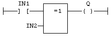
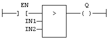
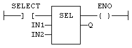
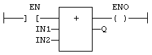

A Ladder Diagram is a list of rungs. Each rung represents a boolean data flow from a power rail on the left to a power rail on the right. The left power rail represents the TRUE state. The data flow must be understood from the left to the right. Each symbol connected to the rung either changes the rung state or performs an operation. Below are possible graphic items to be entered in LD diagrams:
Power Rails
Contacts
and
Coils
Operations
,
Functions
and
Function blocks
, represented by
rectangular blocks
Labels
and
Jumps
Use of ST instructions in graphic
languages
Use of the EN input and the ENO output for blocks
The rung state in a LD diagram is always boolean. Blocks are connected to the rung with their first input and output. This implies that special EN and ENO input and output are added to the block if its first input or output is not boolean.
The EN input is a condition. It means that the operation represented by the block is not performed if the rung state (EN) is FALSE. The ENO output always represents the sane status as the EN input: the rung state is not modified by a block having an ENO output.
Below is the example of the XOR block, having boolean inputs and outputs, and requiring no EN or ENO pin:
First input is the rung. The rung ist the output.

Below is the example of the > (greater than) block, having non boolean inputs and a boolean output. This block has an EN input in LD language:
The comparison is executed only if EN is TRUE.

Below is the example of the SEL function, having a first boolean input, but an integer output. This block has an ENO output in LD language:
The input rung is the selector.
ENO has the same value as SELECT.

Finally, below is the example of an addition, having only numerical arguments. This block has both EN and ENO pins in LD language:
The addition is executed only if EN is TRUE.
ENO is equal to EN.
